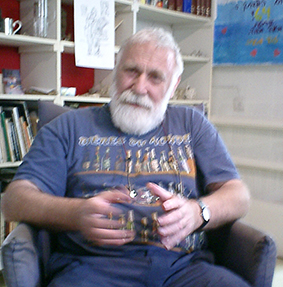
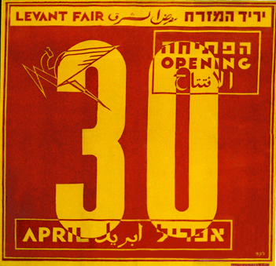

מכון שנקר לתיעוד וחקר העיצוב בישראל
معهد شنكار لتوثيق وبحث التصميم في اسرائيل
Shenkar Design Archive & Research Center Israel
על המכון
אודותינו
אירועים
הודעות
מטרות המכון
צור קשר
תורמים
תחומי עיצוב
עיצוב אופנה
תקשורת חזותית
עיצוב טקסטיל
עיצוב מבנה
עיצוב קרמי
עיצוב תכשיטים
עיצוב תעשייתי
תכנים חזותיים
אוספים
מעצבים
נושאים
קטגוריות
לפי שנים
סגנונות
השפעות
תערוכות
תכנים עיוניים
כתבות
מאמרים
מסמכים
ספרים
פילוסופיות
טקסטים
צילום
English
العربية
עברית
עזרה
ביטויים ומושגים
הדרכה למעצבים
מחולל הערות
מבנה האתר
מדריך לעובד
עזרה אישית
תזאורוס
אישי
הרשמה וכניסה
איסוף עבודות
הערות
מחולל מצגות
שליחת עבודות
עריכה 1
עריכה 2
עריכה 3
חיפוש מתקדם
תחומי עיצוב
>
תקשורת חזותית
>
מעצבים
>
שם התוצאה
הבא
|
הקודם

שם המעצב
Designer
ארץ לידה
תאריך לידה
תחומי עיצוב
מס' עבודות באתר
צלם
תאריך הצילום
מאוסף
קרמן דני
Kerman Dani
ישראל
1940
איור, עיצוב
מכון שהקר
מילות מפתח
קורות חיים
פילוסופיית עיצוב
תצלומים אישיים
כתבות
מאמרים
מסמכים
ספרים
וידאו
טקסטים
תערוכות באתר המכון
קישורים
אתר המעצב
תקשורת חזותית
חיפוש
מעצבים
קטגוריות
נושאים
שנים
סגנונות
קטגוריות זמינות למעצב זה
new value 1
ספרים
new value 3
new value 4
new value 5
new value 6
new value 7
new value 8
new value 9

תקציר פילוסופי